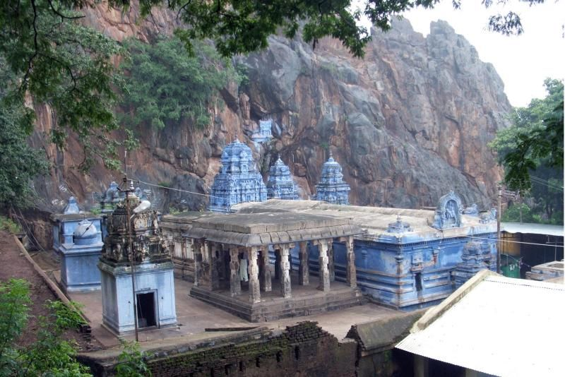

Hogenakkal Falls, often called the "Niagara of India," is a stunning waterfall located on the Kaveri River in Dharmapuri district, Tamil Nadu. The falls are renowned for their scenic beauty, where the river plunges down rugged rocks, creating a misty aura. Hogenakkal is famous for coracle rides, where visitors can experience the falls up close, and for its therapeutic oil massages offered by local practitioners. The area is also surrounded by lush greenery, making it a popular spot for nature lovers and photographers. The name "Hogenakkal" means"smoking rocks"referring to the smoky mist created as the water hits the rocks below.
Theerthamalai Temple is an ancient and revered Hindu shrine located atop a hill in Dharmapuri district, Tamil Nadu. Dedicated to Lord Shiva, the temple is a significant pilgrimage site, attracting devotees who seek blessings and spiritual solace. The temple's name, "Theerthamalai," translates to"Holy Hill," highlighting its sacred importance. The temple is renowned for its natural springs, believed to have holy water with purifying properties. The climb to the temple, with its scenic views of the surrounding landscape, adds to the spiritual experience. The temple is especially crowded duringMaha Shivaratri, a major festival celebrated with great devotion.
Adhiyamankottai Fort is a historical fort located near Dharmapuri in Tamil Nadu, associated with the ancient Tamil king Adhiyaman, a ruler of the Sangam era. The fort, though largely in ruins today, offers a glimpse into the region's rich history and heritage. It once served as a stronghold and a strategic military base. Visitors can explore the remnants of the fort's walls, gateways, and other structures, which reflect the architectural style of the period. The fort also houses theancient Chenraya Perumal Temple, adding to its historical and cultural significance. Adhiyamankottai Fort is a fascinating site for history enthusiasts and those interested in Tamil Nadu's past.
Kottai Kovil is a prominent Hindu temple located in Dharmapuri town, Tamil Nadu. Dedicated toLord Shiva, this temple is known for its unique Dravidian architecture and spiritual significance. "Kottai Kovil" translates to "Fort Temple," reflecting its historical connection to the nearby Adhiyamankottai Fort. The temple features intricately carved pillars, vibrant sculptures, and a majestic tower (Gopuram) that stands out in the town's skyline. Devotees visit the temple to seek blessings from Lord Shiva and to participate in various religious ceremonies. The temple is a central part of Dharmapuri's cultural and religious life, attracting both locals and tourists who are interested in the region's heritage.